本州艺术家协会第二界画展在本市艺术中心举办
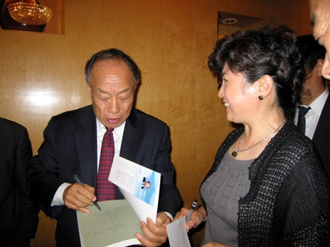 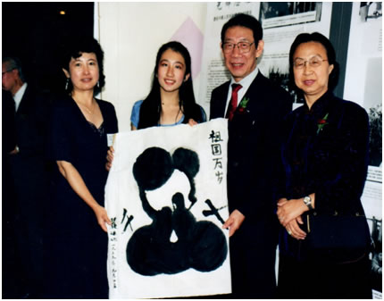 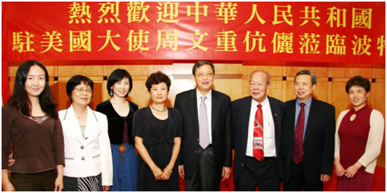 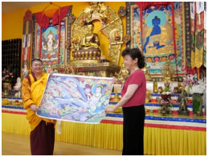
Foreign Chinese Minister of Foreign Affairs gives Principal Jiao his biography // Principal Jiao and Teacher Mimi Yan takes a picture with Foreign Chinese Consul General Yunxiang Wang and his wife // Ambassador WenZhong Zhou and keyu peng takes a picture with Principal Jiao and Teachers // Principal Jiao donates an art work to Huilin Temple at the Grand opening.
前中国外交部长李肇星赠送他写的自传给焦莹校长，并签名留念。
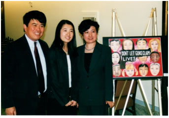 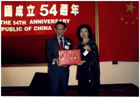 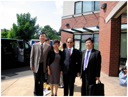
US Congressman David Wu presents award to Mimi Yan in Washington D.C // Foreign Chinese Consul General Yunxiang Wang presents award to Principal Jiao //International Chinese Artists Association president Guanqige presents Principal Jiao with an executive director certificate
 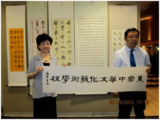 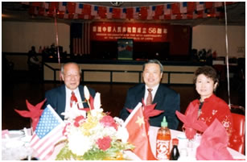 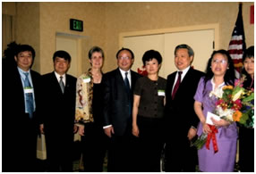
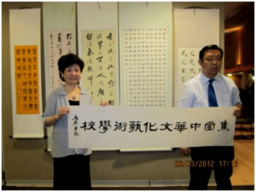 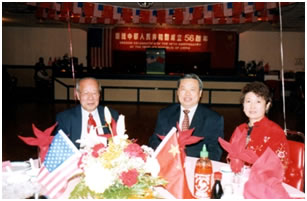 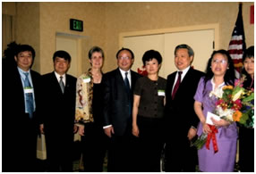
主办 华人春节晚会Chinese New Year Celebration main organizer//书法家题字 //组办国庆活动—彭克玉大使亲临//孔子学院成立 Portland Confucius Institute Founding Ceremony
 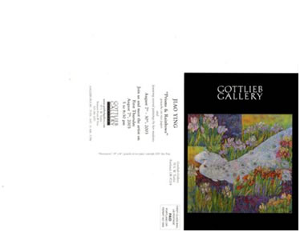
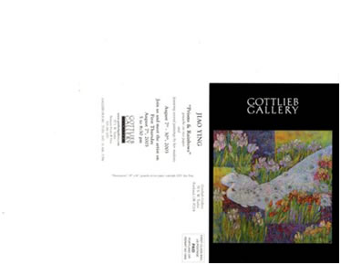
Jiao Ying Art Show –GOTTLIEB GALLERY 2003
 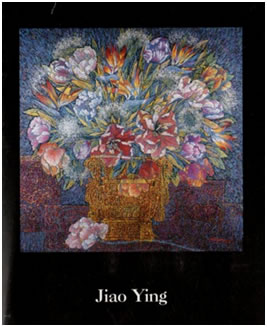
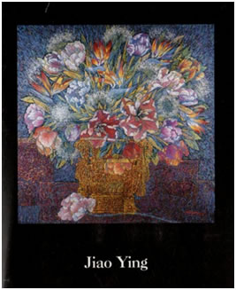 
NELSON/ROVZAR Gallery—Seattle Kirkland , Jiao Ying Art Show


Jiao Ying art work Oil painting on canvas // Jiao Ying art show // NELSON/ROVZAR Gallery—Seattle Kirkland Jiao Ying Art Show
 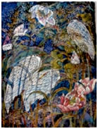
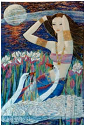
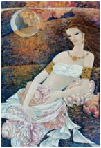
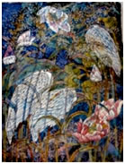
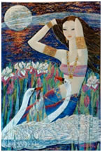
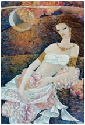

Primary Elements Gallery@ Cannon Beach //Portland Art center Art show
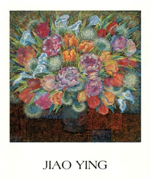 

PRIMARY ELEMENTS GALLERY—Cannon Beach Jiao Ying Art Show

 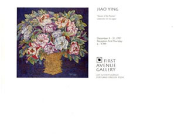
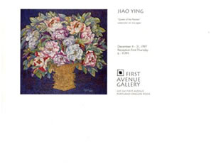

1992年—劳伦斯画廊个人画展 Lawrence Gallery // Jiao Ying Art Show Portland 1st Avenue Gallery Art show
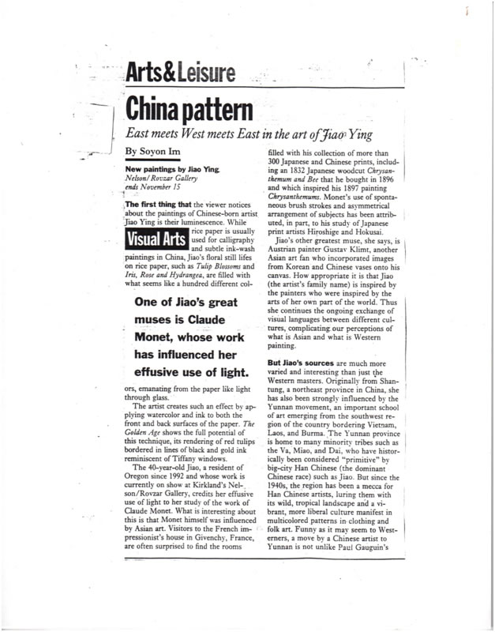
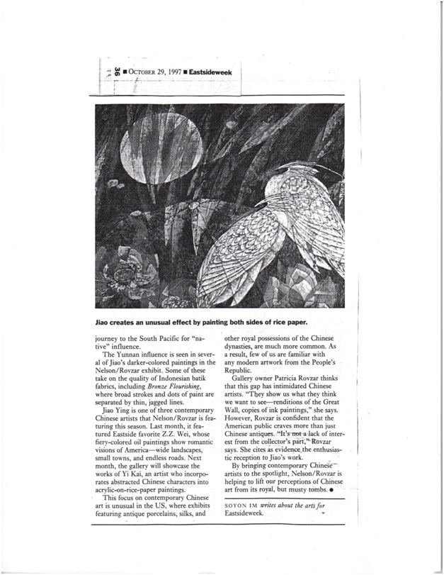
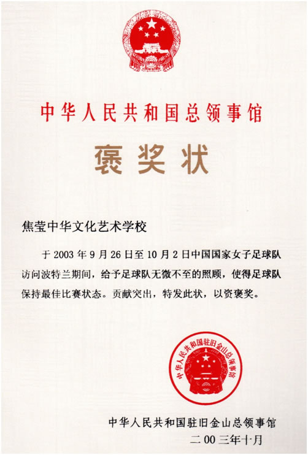
Jiao Ying Art show--- Seattle newspaper reports
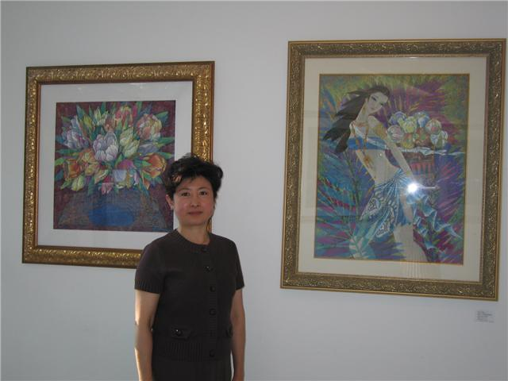